Create Hosts
We will use the script generated you created the location as the User Data to be passed into each EC2 instance created.
Don't forget to update it with the right update commands after the API_URL variable, as documented.
Navigate to the EC2 console and let's get started!
Create SSH Key
To create an SSH Key:
-
Click on the
Key pairslink in the EC2 console.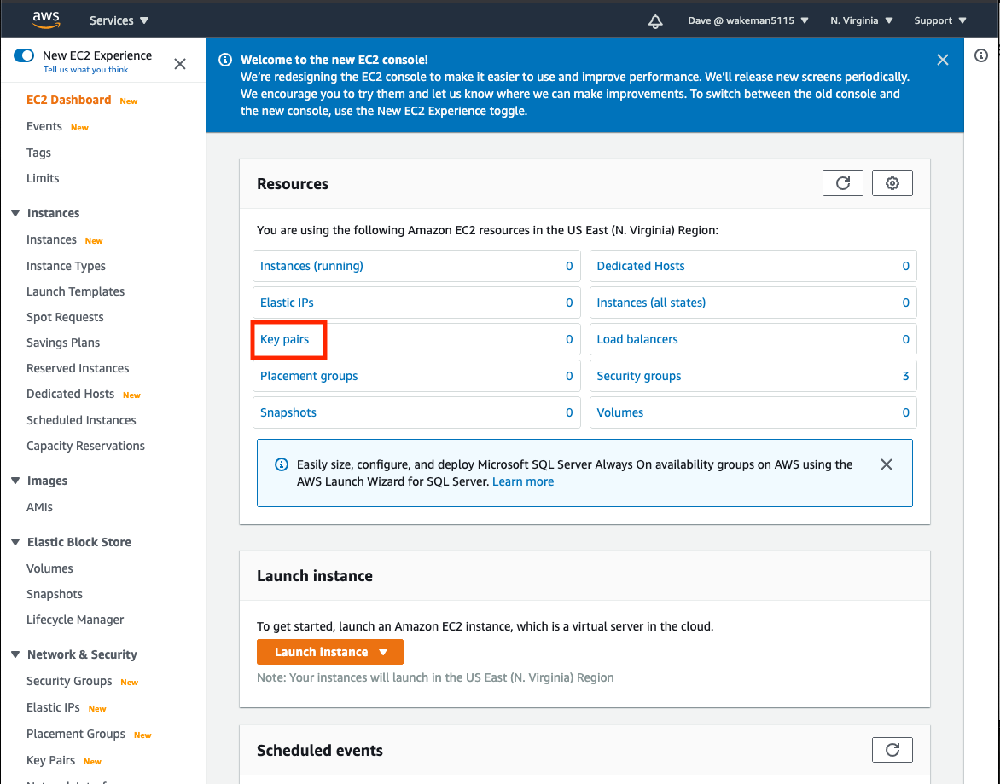
-
You will probably see that you have no key pairs in the list.
Note
AWS will allow you to generate a new key pair, in which it will generate and download a key file (a file with a
.pemextension) that you can later specify as the private key when you use thesshcommand. It will save the public key in the key pair object in AWS and add that public key to your EC2 instance when you create it (assuming you choose this key).The other option is to import a key. In this case you will import the contents of your public key and AWS stores it in the key pair. You can use this option if you already have an SSH key and don't want to create a new one.
-
If you choose to import an existing key, click the
Actionsdropdown at the top of the list and selectimport key pair. Give your key a name and copy/paste the contents of your key into the text box in theKey pair filesection. You could also use theBrowsebutton to choose the file. ClickImport key pair.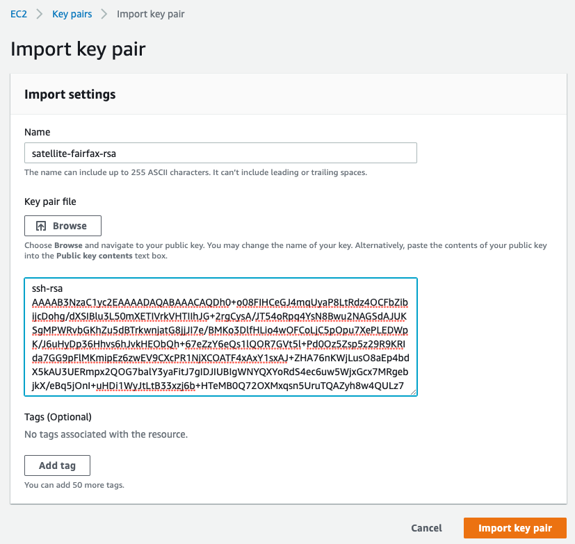
-
If you choose to create a new key pair click the
Create key pairbutton above the list of keys on the Key pairs console. Give your key a name, leave thefile formatset topemand clickCreate key pair.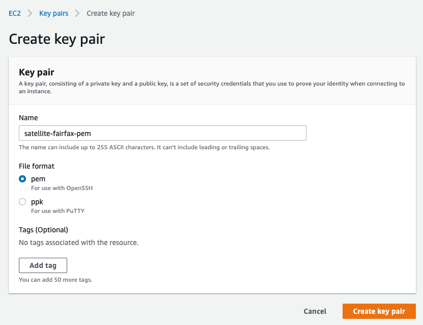
Warning
Be aware that when you clicked the
Create key pairbutton, the browser automatically downloaded a file. This is very important!! This is your private key, and you will need it later if you use thesshcommand to access your EC2 instance.DO NOT LOSE THIS FILE! You will never get a chance to download it again and without it you will not be able to access your EC2 instance.
-
Create EC2 instances
Now we are ready to create some EC2 instances to use for the control plane for you IBM Cloud Satellite location. These hosts have some minimum requirements, which are documented here. For the most part, the key requirements are:
- at least 4 vCPUs
- at least 16GB Memory
- at least 100GB attached storage
To create an EC2 instance:
-
Click on the
Instanceslink in the left navigation menu of the EC2 Dashboard. -
Click on the
Launch instancesdropdown and selectLaunch instances.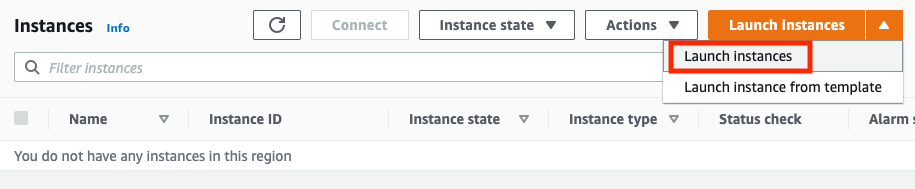
-
The first step is to select an Amazon Machine Image (AMI) to use for the EC2 instance. Search for
RHEL-7.9in the search window. We want to use a community image, so click the link for results in Community AMIs.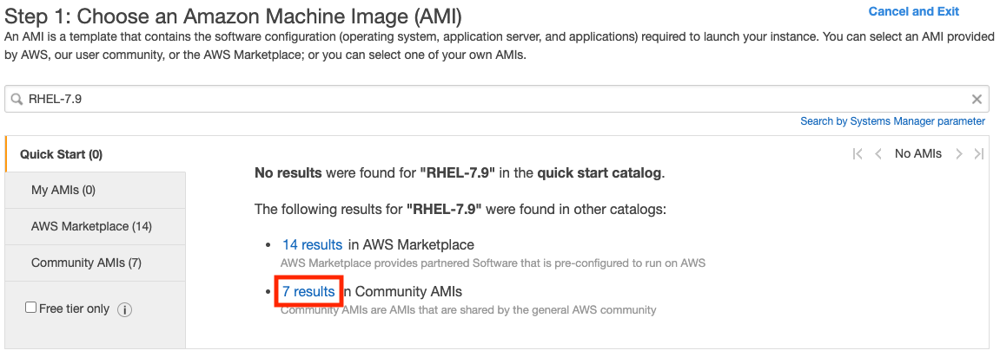
-
There should be an image on the list with a name like
RHEL-7.9_HVM_GA-20200917-x86_64-0-Hourly2-GP2. Click theSelectbutton on the line containing that image.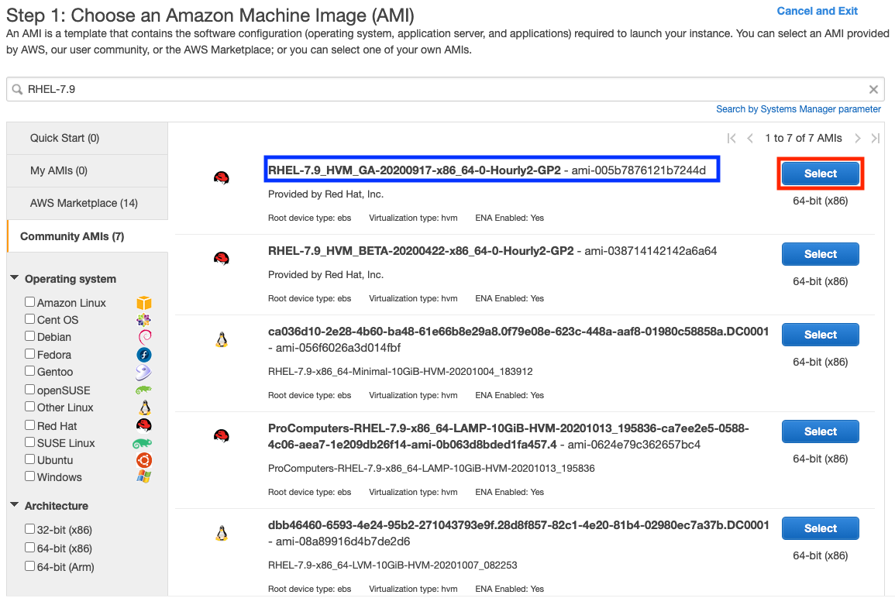
-
Next you need to choose the instance type. This is the hardware configuration for the instance. Click the checkbox next to
t3.xlarge. This type has 4 vCPUs and 16GB of RAM. ClickNext: Configure Instance Details.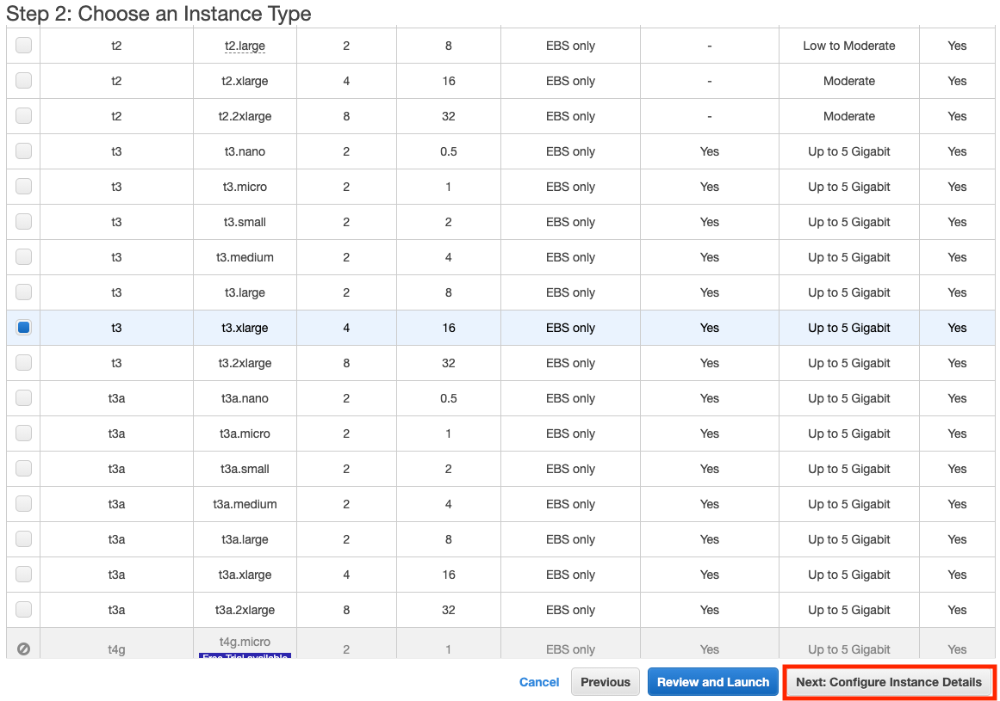
-
In the
Configure Instance Detailspage there are several things we need to change.-
Click the
Networkdropdown and select your VPC. The subnet should automatically fill in with one of the subnets in your VPC. Click on theAuto-assign Public IPdropdown and chooseEnable.Attention
Take note of which subnet is selected! We want each of our EC2 instances for the control plane to be on different subnets; this will give us instances in different availability zones for resilience.
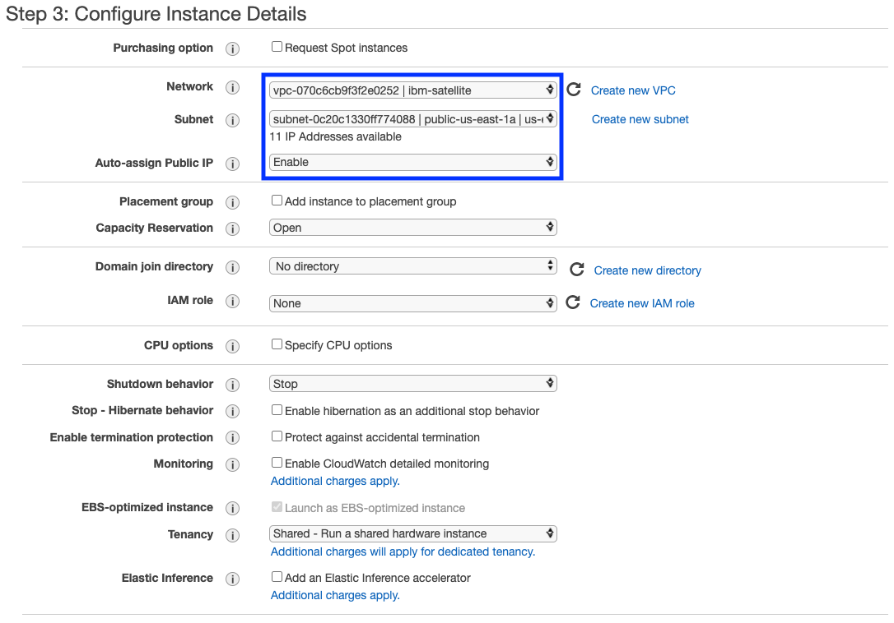
-
Scroll down to the bottom of the form and find the
user datafield. This field can contain a script that will be automatically executed when the instance is created. Click theas fileradio button, click theChoose filebutton and select the script that you downloaded when you created your satellite location.Note
Remmeber that you updated the script with some additional commands after you downloaded it. Before selecting the file, check to be sure those updates are in the file.
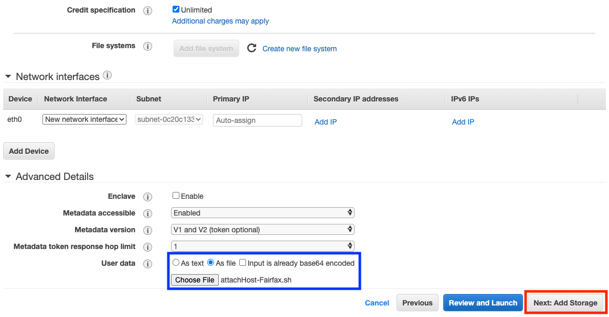
Click the
Next: Add Storagebutton. -
-
All we need to do on the storage page is change the size of the volume to make sure it meets the minimum requirements. Click in the
Sizefield and change the value to100. ClickNext: Add Tags.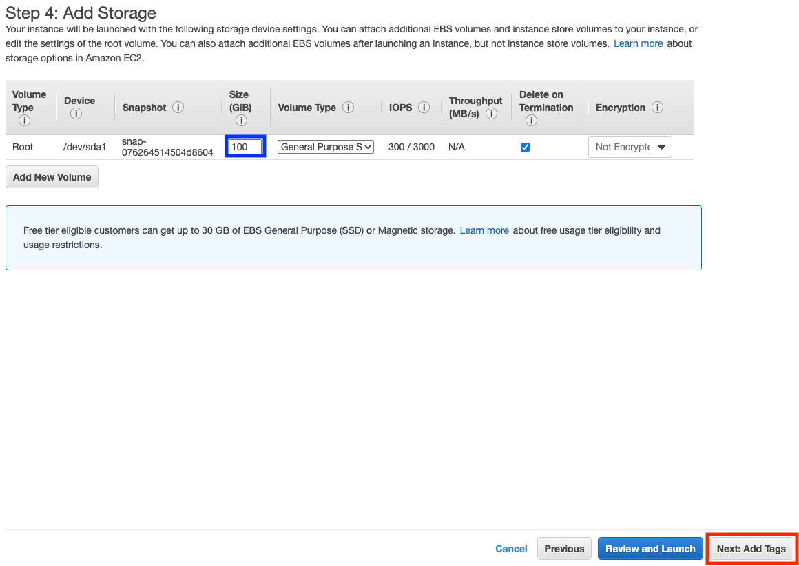
-
Add some tags if you wish. At a minumum you should provide a
Nametag, which gives your EC2 instance a name. It might be a good idea to add tags forsat-location-nameandsat-location-idso that you have traceability back to your IBM Cloud Satellite location. When done adding tags clickNext: Configure Security Group. 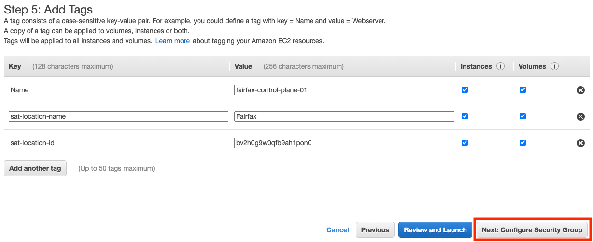 -
Next we need to specify the security group to attach to this EC2 instance. We already created one earlier, so we will use that one. Click the radio button for
Select an **existing** security group, then click the checkbox next to the security group you created. ClickReview and Launch.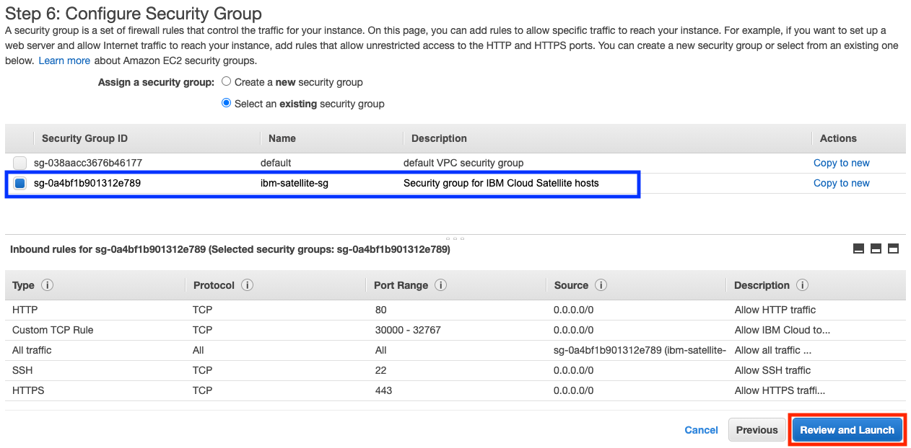
-
Review the details on the
Review Instance Launchpage to verify that they are correct.Caution
You might see a warning that your security group is open to the world. That is because we used
0.0.0.0/0as the source for the inbound security rules. That is okay for demo and testing purposes but is not best practices for production. IBM documents the minumum required inbound and outbound connectivity requirements that are needed for your location to function properly. More access may be required for services you provision into your IBM Satellite location. -
When you are satisfied that everything is correct, click the
Launchbutton. A new dialog will pop up asking you to specify a key pair. Make sure the first dropdown is set toChoose an eisting key pair. If not, click the dropdown and select it. Then click the second dropdown to choose the key pair you created earlier. Click the checkbox acknowledging that you can't access the intance without the file. Clicklaunch Instances.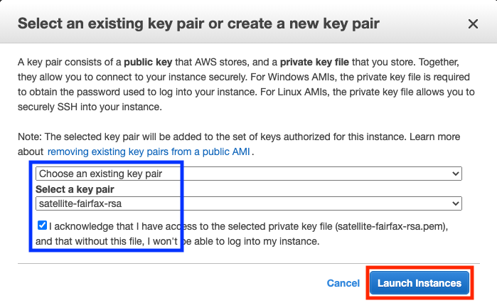
You will be shown a Launch Status page. Click the View Instances button at the bottom to go back to the Instances dashboard. You may also want to go back to your IBM Satellite location and view the Hosts tab. After a few minutes your new EC2 instance should show up.
At this point you should see your EC2 instance being provisioned. Once created it will run the registration script you generated when you created your location and will attach itself to your location. Usually this process takes just a few minutes. When it is ready you will see your host on the Hosts page for your location.
Now repeat the steps above to create two more EC2 instances. Remember to:
- Use a different subnet in your VPC for each instance. You want each of your three control plane hosts to be in a different availability zone.
- Use a different value for the
Nametag so that each instance has a unique name.
Once all three instances are up and running your Instances view in the EC2 dashboard will look like this:
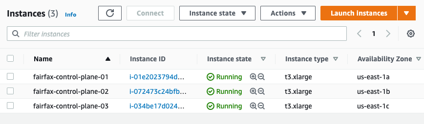
Attention
The control plane for an IBM Cloud Satellite location requires at least 3 hosts that are managed from 3 different availability zones in IBM Cloud. The hosts themselves do not have to be separated from each other, but it is a good practice to separate them if possible.
When they have all been attached to your satellite location you will see them in the Hosts page.

Note
It may take several minutes for the hosts to appear in the satellite location hosts page.
Congratulations! You have successfully created EC2 instances and attached them to your IBM Satellite location. Next we will assign them to the control plane for your location.